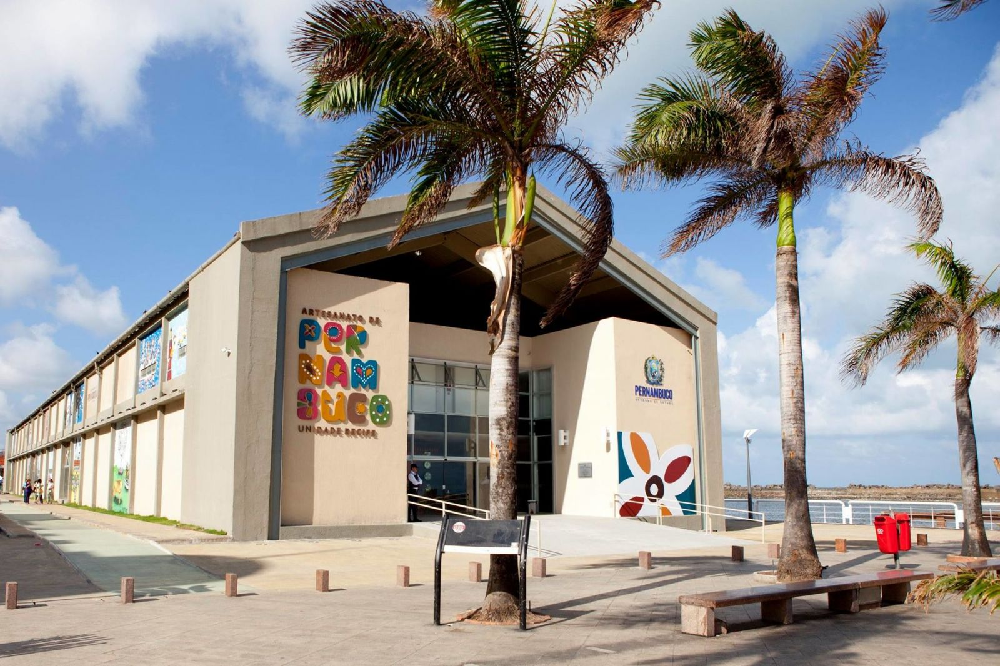

Roteiro de Visitação
O Marco Zero do Recife é um ponto imperdível para quem visita a cidade. Localizado no bairro do Recife Antigo, ele representa o centro geográfico da capital pernambucana e é cercado por uma atmosfera vibrante e cheia de história.
Pontos de Interesse
1. Comece seu passeio pela Praça do Marco Zero, onde você encontrará uma rosa dos ventos no chão, marcando o ponto exato do início da cidade.

2. Em seguida, visite o Centro de Artesanato de Pernambuco, que fica logo em frente à praça e oferece uma grande variedade de artesanato regional.

3. Ao caminhar pelas redondezas, não deixe de observar as esculturas de Francisco Brennand, que decoram o cenário ao redor do Marco Zero.